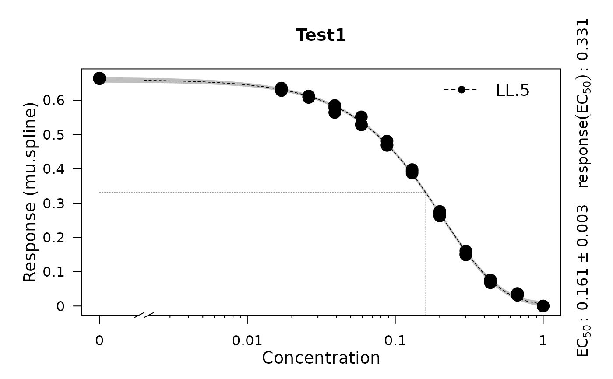
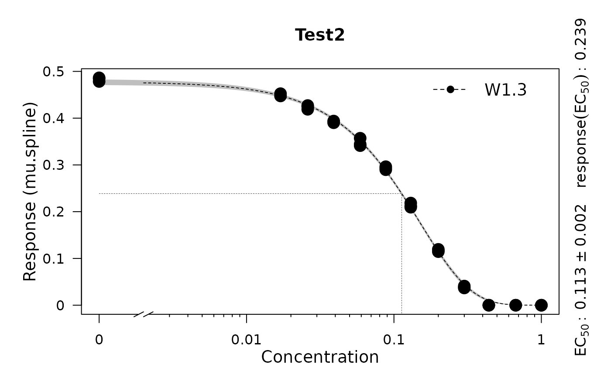

Perform a dose-response analysis on response vs. concentration data
Source:R/dose-response-analysis.R
growth.drFit.Rdgrowth.drFit serves to determine dose-response curves on every condition in a
dataset. The response parameter can be chosen from every physiological parameter in a
gcTable table which is obtained via growth.gcFit. growth.drFit
calls the functions growth.drFitSpline and growth.drBootSpline, or growth.drFitModel to
generate a table with estimates for EC50 and respecting statistics.
Usage
growth.drFit(
gcTable,
control = growth.control(dr.method = "model", dr.model = c("gammadr", "multi2", "LL.2",
"LL.3", "LL.4", "LL.5", "W1.2", "W1.3", "W1.4", "W2.2", "W2.3", "W2.4", "LL.3u",
"LL2.2", "LL2.3", "LL2.3u", "LL2.4", "LL2.5", "AR.2", "AR.3", "MM.2"),
dr.have.atleast = 6, dr.parameter = "mu.linear", nboot.dr = 0, smooth.dr = NULL,
log.x.dr = FALSE, log.y.dr = FALSE)
)Arguments
- gcTable
A dataframe containing the data for the dose-response curve estimation. Such table of class
gcTablecan be obtained by runninggrowth.gcFit.- control
A
grofit.controlobject created withgrowth.control, defining relevant fitting options.- dr.method
(Character) Define the method used to perform a dose-responde analysis: smooth spline fit (
'spline') or model fitting ('model').- dr.model
(Character) Provide a list of models from the R package 'drc' to include in the dose-response analysis (if
dr.method = 'model'). If more than one model is provided, the best-fitting model will be chosen based on the Akaike Information Criterion.- dr.have.atleast
(Numeric) Minimum number of different values for the response parameter one should have for estimating a dose response curve. Note: All fit procedures require at least six unique values. Default:
6.- dr.parameter
(Character or numeric) The response parameter in the output table to be used for creating a dose response curve. See
growth.drFitfor further details. Default:'mu.linfit', which represents the maximum slope of the linear regression. Typical options include:'mu.linfit','lambda.linfit','dY.linfit','mu.spline','dY.spline','mu.model', and'A.model'.- smooth.dr
(Numeric) Smoothing parameter used in the spline fit by smooth.spline during dose response curve estimation. Usually (not necessesary) in (0; 1]. See
smooth.splinefor further details. Default:NULL.- log.x.dr
(Logical) Indicates whether
ln(x+1)should be applied to the concentration data of the dose response curves. Default:FALSE.- log.y.dr
(Logical) Indicates whether
ln(y+1)should be applied to the response data of the dose response curves. Default:FALSE.- nboot.dr
(Numeric) Defines the number of bootstrap samples for EC50 estimation. Use
nboot.dr = 0to disable bootstrapping. Default:0.
Value
An object of class drFit.
- raw.data
Data that passed to the function as
gcTable.- drTable
Dataframe containing condition identifiers, fit options, and results of the dose-response analysis.
- drBootSplines
List of all
drBootSplineobjects generated by the call ofgrowth.drBootSplinefor each distinct experiment.- drFittedSplines
List of all
drFitSplineobjects generated by the call ofgrowth.drFitSplinefor each distinct experiment.- control
Object of class
grofit.controlcontaining list of options passed to the function ascontrol.
Details
Common response parameters used in dose-response analysis:
Linear fit:
- mu.linfit: Growth rate
- lambda.linfit: Lag time
- dY.linfit: Density increase
- A.linfit: Maximum measurement
Spline fit:
- mu.spline: Growth rate
- lambda.spline: Lag time
- A.spline: Maximum measurement
- dY.spline: Density increase
- integral.spline: Integral
Parametric fit:
- mu.model: Growth rate
- lambda.model: Lag time
- A.model: Maximum measurement
- integral.model: Integral'
References
Matthias Kahm, Guido Hasenbrink, Hella Lichtenberg-Frate, Jost Ludwig, Maik Kschischo (2010). grofit: Fitting Biological Growth Curves with R. Journal of Statistical Software, 33(7), 1-21. DOI: 10.18637/jss.v033.i07
See also
Other growth fitting functions:
growth.gcBootSpline(),
growth.gcFitLinear(),
growth.gcFitModel(),
growth.gcFitSpline(),
growth.gcFit(),
growth.workflow()
Examples
# \donttest{
# Create random growth data set
rnd.data1 <- rdm.data(d = 35, mu = 0.8, A = 5, label = 'Test1')
rnd.data2 <- rdm.data(d = 35, mu = 0.6, A = 4.5, label = 'Test2')
rnd.data <- list()
rnd.data[['time']] <- rbind(rnd.data1$time, rnd.data2$time)
rnd.data[['data']] <- rbind(rnd.data1$data, rnd.data2$data)
# Run growth curve analysis workflow
gcFit <- growth.gcFit(time = rnd.data$time,
data = rnd.data$data,
parallelize = FALSE,
control = growth.control(fit.opt = 's',
suppress.messages = TRUE))
# Perform dose-response analysis
drFit <- growth.drFit(gcTable = gcFit$gcTable,
control = growth.control(dr.parameter = 'mu.spline'))
#>
#> === EC 50 Estimation ==============================
#> ---------------------------------------------------
#> --> Checking data ...
#> --> Number of distinct tests found: 2
#> --> Valid datasets per test:
#> TestID Number
#> Test1 35
#> Test2 35
# Inspect results
summary(drFit)
#> Test log.x log.y Samples EC50.Estimate EC50.Std..Error EC50.Lower EC50.Upper
#> 1 Test1 FALSE FALSE 0 0.1585435 0.002612063 0.1532229 0.1638641
#> 2 Test2 FALSE FALSE 0 0.1176471 0.001626428 0.1143342 0.1209600
#> yEC50 test model
#> 1 0.3323461 mu.spline W1.3
#> 2 0.2331335 mu.spline W1.3
plot(drFit)


# }